In the name of continuing the blogification of our posts from our Instagram page, let’s spread our wings and get into the graphic design of Wingspan.
Despite Wingspan being about collecting a bunch of different birds, it’s only very loosely a set collection game. Instead it’s mainly an engine builder game where every bird you collect makes one of your actions better.
Game design: Elizabeth Hargraves
Illustration: Natalia Rojas, Ana María Martínez Jaramillo, and Beth Sobel
Publisher: Stonemaier Games

The player boards in Wingspan are packed full of information. They display all the actions you can take in the game and provide an easy to use system for taking your actions and activating the powers on your birds. The fact that the actions get better when you have more birds is made clear by the bird cards covering up the less powerful versions of the actions.
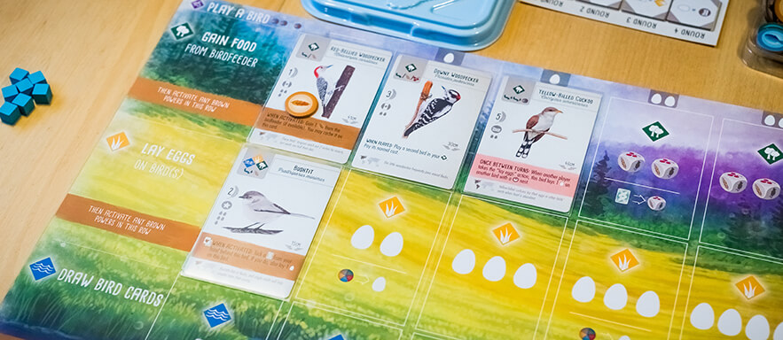Each card spot on the player boards in Wingspan have icons explaining what that row's action does if that spot is the left-most uncovered one. The main icons are very straight forward, showing you what you get and how much. Every other spot though, there is an extra, optional action shown, where you have to pay one thing to get something different. This is shown very clearly with the help of an arrow pointing from the cost to the reward.
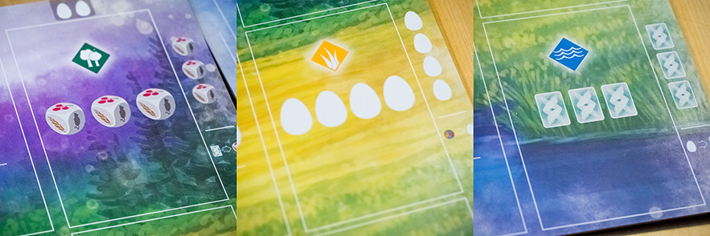In almost all cases, the cards in Wingspan show nearly all the information you need while you hold them in your hand. The most important information that is not visible is the cards effect, which would have been hard to place so it was visible, but it's still a shame that it's not. Luckily, you usually don't have that many cards in hand. Other hidden information includes the name of the card as well as the bird's wingspan, both of which only matter in rare cases, mostly related to bonus cards.
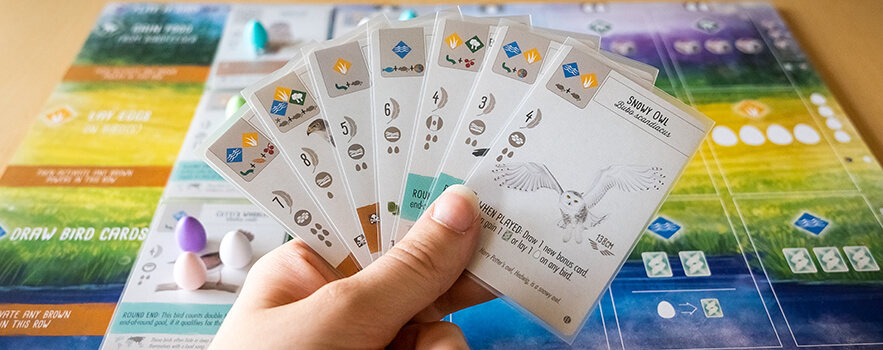For when the cards are placed on the player boards, it would have been nice if they had actual spaces for placing the eggs, because that would have made it much more clear how many eggs you can place on each card, especially when you already have some eggs placed and need to figure out how many more you have room for.
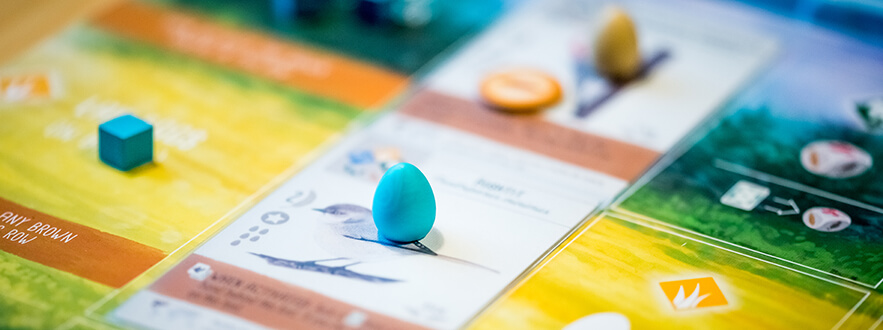One of the few things in Wingspan that isn't graphically great is the tucked cards. Or more accurately: It's sometimes hard to see how many tucked cards there are under a certain bird, and there isn't much room to have them stick out to either side. When you tuck cards under a bird in the middle of a habitat it can also be a bit difficult not to knock anything over. However, you don't usually have this many tucked cards, so it's not that much of a problem.
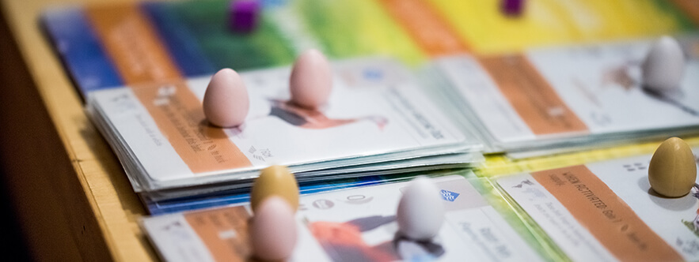To me, the biggest strength of the bonus cards in Wingspan is the lack of ambiguity. Even the bonus cards with less clear goals, like the Anatomist, clearly state exactly what counts towards the goal. The fact that the percentage of cards that fit the goal is shown at the bottom of the cards is also great, because there is no way for you to figure out how good a bonus card has the potential to be without that.
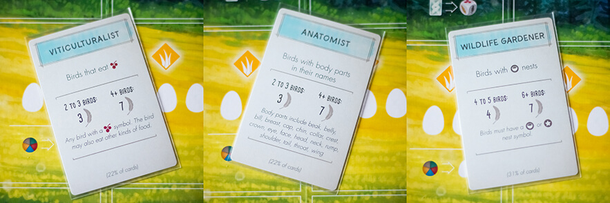Unfortunately, the bonus cards are designed in such a way that basically no information is visible if you have several cards in hand. This is usually not that big of a deal as you mostly have just one of them, but when I had four bonus cards during our last game, it became a bit of an issue.
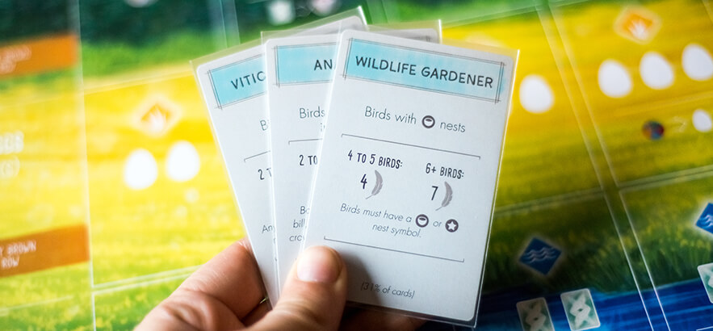The egg miniatures in Wingspan are super adorable, and the fact that they come in different colors make the player boards look super pretty mid-game, but I cannot help but wonder if it would not have been easier to get a clear overview of how many eggs each card has if they were all the same color. It might not be that much of an issue though, and it does provide both table presence and a nicer thematic feel for the game.
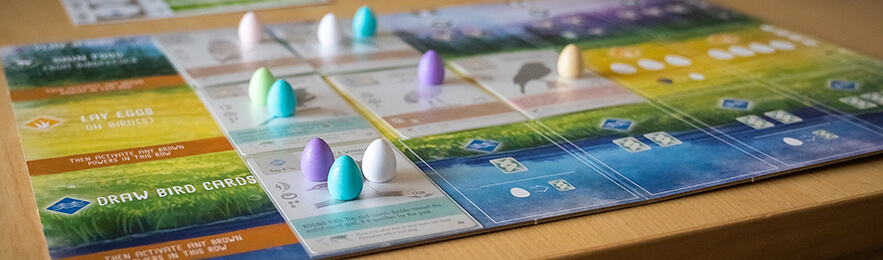With me and my perfectionism it does however make the Lay Eggs action take more time, because of course the egg color has to match the birds most prominent color, and you can definitely not mix different colored eggs on the same bird! 😉 This means I need to figure out which birds I want to place eggs on before I can even take the eggs.
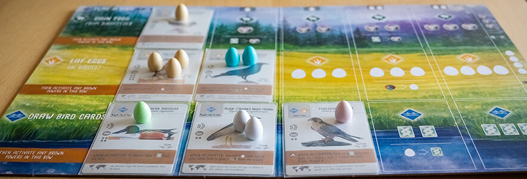The food icons in Wingspan are easy to tell apart on both the food dice and food tokens as well as the cards. The colors used are not perfect for people with color blindness, but since the icons are still unique that is not crucial.
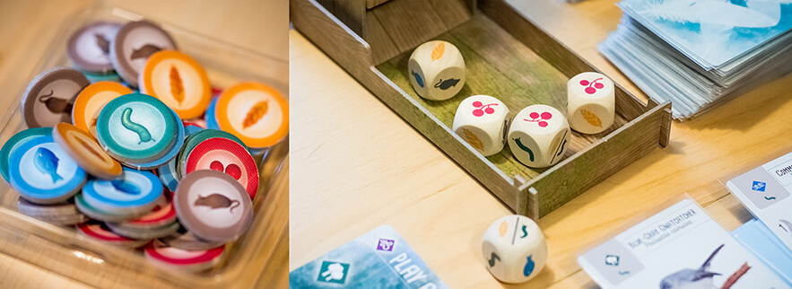When I first learned that the game came with a bird feeder dice tower (which was long before I owned the game), I thought it was kind of unnecessary, but considering how many times per game you reroll the dice, plus the fact that it matters which dice are in the bird feeder and which are not, I think it makes for a great thematic component that makes the gameplay smoother. There's also something really satisfying about popping all the dice in the back of the bird feeder and watch them tumble through.
The round tracker in Wingspan has a very clear and simple design. There are spots for the round goals as well as spaces for tracking who got what placement for each goal. Because the points only need to be calculated at game end, all you need to pay attention to is what placement you got, and place your cube accordingly. I love how you use one of your action cubes to mark your placement at the end of each round, as this makes you automatically get one action less each round, without you needing to remember it.
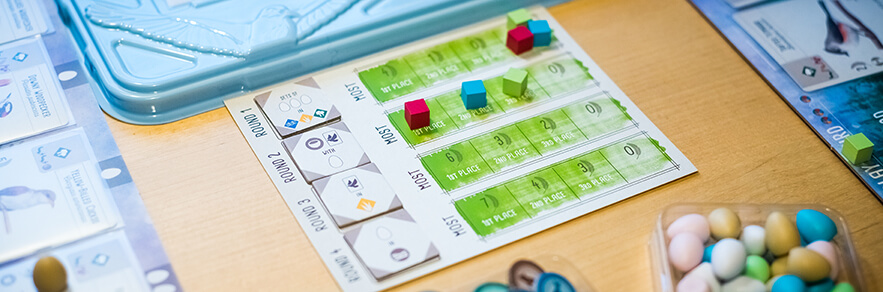Most of the goal tiles have really clear icons that follow a distinct pattern (the only one I feel is a bit confusing is the one farthest to the right below).
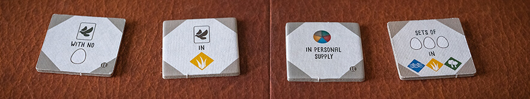Wingspan uses clear graphic design in order to help players understand and remember the rules of the game. There are, for example, a lot of rules packed into the graphic design of the player boards that would otherwise be overwhelming, especially for new players.
This is my absolute favourite use of graphic design, and it’s also the one that usually gets the least attention, because it’s not flashy; it’s just there.